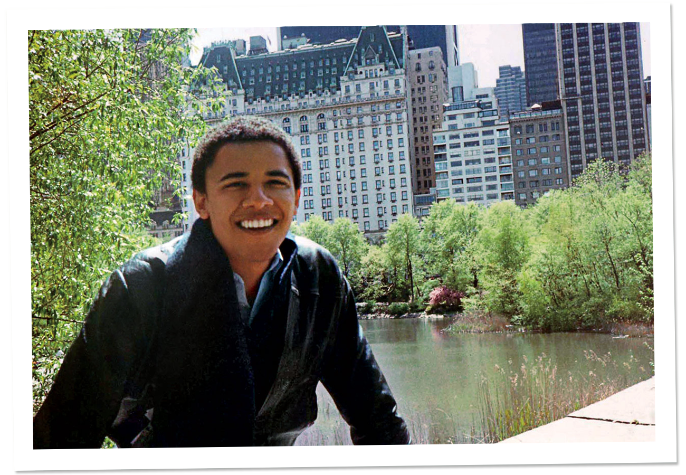

Barack Obama
Barack Hussein Obama II (/bəˈrɑːk huːˈseɪn oʊˈbɑːmə/ born August 4, 1961) is an American politician who served as the 44th President of the United States from January 20, 2009, to January 20, 2017. A member of the Democratic Party, he was the first African American to be elected to the presidency and previously served as a United States Senator from Illinois (2005–2008).
Obama was born in 1961 in Honolulu, Hawaii, two years after the territory was admitted to the Union as the 50th state. Raised largely in Hawaii, he also lived for a year of his childhood in the State of Washington and four years in Indonesia. After graduating from Columbia University in 1983, he worked as a community organizer in Chicago. In 1988, he enrolled in Harvard Law School, where he was the first black president of the Harvard Law Review. After graduating, he became a civil rights attorney and a professor, teaching constitutional law at the University of Chicago Law School from 1992 to 2004. He represented the 13th district for three terms in the Illinois Senate from 1997 to 2004, when he ran for the U.S. Senate. He received national attention in 2004 with his March primary win, his well-received July Democratic National Convention keynote address, and his landslide November election to the Senate. In 2008, he was nominated for president a year after his campaign began and after a close primary campaign against Hillary Clinton. He was elected over Republican John McCain and was inaugurated on January 20, 2009. Nine months later, he was named the 2009 Nobel Peace Prize laureate, accepting the award with the caveat that he felt there were others "far more deserving of this honor than I".
During his first two years in office, Obama signed many landmark bills into law. The main reforms were the Patient Protection and Affordable Care Act (often referred to as "Obamacare", shortened as the "Affordable Care Act"), the Dodd–Frank Wall Street Reform and Consumer Protection Act, and the Don't Ask, Don't Tell Repeal Act of 2010. The American Recovery and Reinvestment Act of 2009 and Tax Relief, Unemployment Insurance Reauthorization, and Job Creation Act of 2010 served as economic stimulus amidst the Great Recession. After a lengthy debate over the national debt limit, he signed the Budget Control and the American Taxpayer Relief Acts. In foreign policy, he increased U.S. troop levels in Afghanistan, reduced nuclear weapons with the United States–Russia New START treaty, and ended military involvement in the Iraq War. He ordered military involvement in Libya in opposition to Muammar Gaddafi; Gaddafi was killed by NATO-assisted forces, and he also ordered the military operation that resulted in the deaths of Osama bin Laden and suspected Yemeni Al-Qaeda operative Anwar al-Awlaki.
After winning re-election by defeating Republican opponent Mitt Romney, Obama was sworn in for a second term in 2013. During this term, he promoted inclusiveness for LGBT Americans. His administration filed briefs that urged the Supreme Court to strike down same-sex marriage bans as unconstitutional (United States v. Windsor and Obergefell v. Hodges); same-sex marriage was fully legalized in 2015 after the Court ruled that a same-sex marriage ban was unconstitutional in Obergefell. He advocated for gun control in response to the Sandy Hook Elementary School shooting, indicating support for a ban on assault weapons, and issued wide-ranging executive actions concerning climate change and immigration. In foreign policy, he ordered military intervention in Iraq in response to gains made by ISIL after the 2011 withdrawal from Iraq, continued the process of ending U.S. combat operations in Afghanistan in 2016, promoted discussions that led to the 2015 Paris Agreement on global climate change, initiated sanctions against Russia following the invasion in Ukraine and again after Russian interference in the 2016 United States elections, brokered a nuclear deal with Iran, and normalized U.S. relations with Cuba. Obama left office in January 2017 with a 60 percent approval rating and currently resides in Washington, D.C. Since then, his presidency has been favorably ranked by historians and the general public. He also had a high global approval rating, and the reputation of the United States saw a dramatic upward
Early life and career
Obama was born on August 4, 1961, at Kapiolani Medical Center for Women and Children in Honolulu, Hawaii. He is the only President who was born in Hawaii and the only President who was born outside of the contiguous 48 states. He was born to a white mother and a black father. His mother, Ann Dunham (1942–1995), was born in Wichita, Kansas; she was mostly of English descent, with some German, Irish, Scottish, Swiss, and Welsh ancestry. His father, Barack Obama Sr. (1936–1982), was a married Luo Kenyan man from Nyang'oma Kogelo. Obama's parents met in 1960 in a Russian language class at the University of Hawaii at Manoa, where his father was a foreign student on a scholarship. The couple married in Wailuku, Hawaii on February 2, 1961, six months before Obama was born.
Education
From age six to ten, Obama attended local Indonesian-language schools: Sekolah Dasar Katolik Santo Fransiskus Asisi (St. Francis of Assisi Catholic Elementary School) for two years and Sekolah Dasar Negeri Menteng 01 (State Elementary School Menteng 01/Besuki Public School) for one and a half years, supplemented by English-language Calvert School homeschooling by his mother. As a result of those four years in Jakarta, he was able to speak Indonesian fluently as a child. During his time in Indonesia, Obama's step-father taught him to be resilient and gave him "a pretty hardheaded assessment of how the world works".
In 1971, Obama returned to Honolulu to live with his maternal grandparents, Madelyn and Stanley Dunham. He attended Punahou School— a private college preparatory school— with the aid of a scholarship from fifth grade until he graduated from high school in 1979.[29] In his youth, Obama went by the nickname "Barry".[30] Obama lived with his mother and half-sister, Maya Soetoro, in Hawaii for three years from 1972 to 1975 while his mother was a graduate student in anthropology at the University of Hawaii.[31] Obama chose to stay in Hawaii with his grandparents for high school at Punahou when his mother and half-sister returned to Indonesia in 1975 so his mother could begin anthropology field work.[32] His mother spent most of the next two decades in Indonesia, divorcing Lolo in 1980 and earning a PhD degree in 1992, before dying in 1995 in Hawaii following unsuccessful treatment for ovarian and uterine cancer.[33]
Obama later reflected on his years in Honolulu and wrote: "The opportunity that Hawaii offered – to experience a variety of cultures in a climate of mutual respect – became an integral part of my world view, and a basis for the values that I hold most dear."[34] Obama has also written and talked about using alcohol, marijuana, and cocaine during his teenage years to "push questions of who I was out of my mind".[35] Obama was also a member of the "choom gang", a self-named group of friends that spent time together and occasionally smoked marijuana.[36][37]
After graduating from high school in 1979, Obama moved to Los Angeles to attend Occidental College. In February 1981, Obama made his first public speech, calling for Occidental to participate in the disinvestment from South Africa in response to that nation's policy of apartheid.[38] In mid-1981, Obama traveled to Indonesia to visit his mother and half-sister Maya, and visited the families of college friends in Pakistan and India for three weeks.[38] Later in 1981, he transferred as a junior to Columbia University in New York City, where he majored in political science with a specialty in international relations[39] and in English literature[40] and lived off-campus on West 109th Street.[41] He graduated with a BA degree in 1983 and worked for about a year at the Business International Corporation, where he was a financial researcher and writer,[42][43] then as a project coordinator for the New York Public Interest Research Group on the City College of New York campus for three months in 1985.

From A.P. Images/Obama Presidential Campaign.
Family and personal life
In a 2006 interview, Obama highlighted the diversity of his extended family: "It's like a little mini-United Nations", he said. "I've got relatives who look like Bernie Mac, and I've got relatives who look like Margaret Thatcher."[47] Obama has a half-sister with whom he was raised (Maya Soetoro-Ng, the daughter of his mother and her Indonesian second husband) and seven half-siblings from his Kenyan father's family—six of them living.[48] Obama's mother was survived by her Kansas-born mother, Madelyn Dunham,[49] until her death on November 2, 2008,[50] two days before his election to the Presidency. Obama also has roots in Ireland; he met with his Irish cousins in Moneygall in May 2011.[51] In Dreams from My Father, Obama ties his mother's family history to possible Native American ancestors and distant relatives of Jefferson Davis, President of the Confederate States of America during the American Civil War. He also shares distant ancestors in common with George W. Bush and Dick Cheney, among others.[52]
Obama is a supporter of the Chicago White Sox, and he threw out the first pitch at the 2005 ALCS when he was still a senator.[53] In 2009, he threw out the ceremonial first pitch at the All-Star Game while wearing a White Sox jacket.[54] He is also primarily a Chicago Bears football fan in the NFL, but in his childhood and adolescence was a fan of the Pittsburgh Steelers, and rooted for them ahead of their victory in Super Bowl XLIII 12 days after he took office as president.[55] In 2011, Obama invited the 1985 Chicago Bears to the White House; the team had not visited the White House after their Super Bowl win in 1986 due to the Space Shuttle Challenger disaster.[56] He plays basketball, a sport he participated in as a member of his high school's varsity team,[57] and he is left-handed.[58]
Obama lived with anthropologist Sheila Miyoshi Jager while he was a community organizer in Chicago in the 1980s.[59] He proposed to her twice, but both Jager and her parents turned him down.[59][60] The relationship was only made public in May 2017, several months after Obama's presidency had ended.[60]
In June 1989, Obama met Michelle Robinson when he was employed as a summer associate at the Chicago law firm of Sidley Austin.[61] Robinson was assigned for three months as Obama's adviser at the firm, and she joined him at several group social functions but declined his initial requests to date.[62] They began dating later that summer, became engaged in 1991, and were married on October 3, 1992.[63] The couple's first daughter, Malia Ann, was born in 1998,[64] followed by a second daughter, Natasha ("Sasha"), in 2001.[65] The Obama daughters attended the University of Chicago Laboratory Schools. When they moved to Washington, D.C., in January 2009, the girls started at the Sidwell Friends School.[66] The Obamas have two Portuguese Water Dogs; the first, a male named Bo, was a gift from Senator Ted Kennedy.[67] In 2013, Bo was joined by Sunny, a female.[68]
In 2005, the family applied the proceeds of a book deal and moved from a Hyde Park, Chicago condominium to a $1.6 million house (equivalent to $2.0 million in 2017) in neighboring Kenwood, Chicago.[69] The purchase of an adjacent lot—and sale of part of it to Obama by the wife of developer, campaign donor and friend Tony Rezko—attracted media attention because of Rezko's subsequent indictment and conviction on political corruption charges that were unrelated to Obama.[70]
In December 2007, Money Magazine estimated Obama's net worth at $1.3 million.[71] Their 2009 tax return showed a household income of $5.5 million—up from about $4.2 million in 2007 and $1.6 million in 2005—mostly from sales of his books.[72][73] On his 2010 income of $1.7 million, he gave 14% to non-profit organizations, including $131,000 to Fisher House Foundation, a charity assisting wounded veterans' families, allowing them to reside near where the veteran is receiving medical treatments.[74][75] Per his 2012 financial disclosure, Obama may be worth as much as $10 million.[76]In early 2010, Michelle spoke about her husband's smoking habit and said that Barack had quit smoking.[77][78]
On his 55th birthday, August 4, 2016, Obama penned an essay in Glamour, in which he described how his daughters and the presidency have made him a feminist.[79][80][81]
Presidential campaigns
2008
On February 10, 2007, Obama announced his candidacy for President of the United States in front of the Old State Capitol building in Springfield, Illinois.[163][164] The choice of the announcement site was viewed as symbolic because it was also where Abraham Lincoln delivered his historic "House Divided" speech in 1858.[163][165] Obama emphasized issues of rapidly ending the Iraq War, increasing energy independence, and reforming the health care system,[166] in a campaign that projected themes of hope and change.[167]
Numerous candidates entered the Democratic Party presidential primaries. The field narrowed to a duel between Obama and Senator Hillary Clinton after early contests, with the race remaining close throughout the primary process but with Obama gaining a steady lead in pledged delegates due to better long-range planning, superior fundraising, dominant organizing in caucus states, and better exploitation of delegate allocation rules.[168] On June 7, 2008, Clinton ended her campaign and endorsed Obama.[169]
On August 23, Obama announced his selection of Delaware Senator Joe Biden as his vice presidential running mate.[170] Obama selected Biden from a field speculated to include former Indiana Governor and Senator Evan Bayh and Virginia Governor Tim Kaine.[171] At the Democratic National Convention in Denver, Colorado, Hillary Clinton called for her supporters to endorse Obama, and she and Bill Clinton gave convention speeches in his support.[172] Obama delivered his acceptance speech, not at the center where the Democratic National Convention was held, but at Invesco Field at Mile High to a crowd of approximately 84,000 people; the speech was viewed by over 38 million people worldwide.[173][174][175]
During both the primary process and the general election, Obama's campaign set numerous fundraising records, particularly in the quantity of small donations.[176] On June 19, 2008, Obama became the first major-party presidential candidate to turn down public financing in the general election since the system was created in 1976.[177]
John McCain was nominated as the Republican candidate, and he selected Sarah Palin as his running mate. The two candidates engaged in three presidential debates in September and October 2008.[178] On November 4, Obama won the presidency with 365 electoral votes to 173 received by McCain.[179] Obama won 52.9% of the popular vote to McCain's 45.7%.[180] He became the first African American to be elected president.[181] Obama delivered his victory speech before hundreds of thousands of supporters in Chicago's Grant Park.[182]

2008 electoral vote results
2012
On April 4, 2011, Obama announced his reelection campaign for 2012 in a video titled "It Begins with Us" that he posted on his website and filed election papers with the Federal Election Commission.[183][184][185] As the incumbent president he ran virtually unopposed in the Democratic Party presidential primaries,[186] and on April 3, 2012, Obama had secured the 2778 convention delegates needed to win the Democratic nomination.[187]
At the Democratic National Convention in Charlotte, North Carolina, Obama and Joe Biden were formally nominated by former President Bill Clinton as the Democratic Party candidates for president and vice president in the general election. Their main opponents were Republicans Mitt Romney, the former governor of Massachusetts, and Representative Paul Ryan of Wisconsin.[188]
On November 6, 2012, Obama won 332 electoral votes, exceeding the 270 required for him to be reelected as president.[189][190][191] With 51.1% of the popular vote,[192] Obama became the first Democratic president since Franklin D. Roosevelt to win the majority of the popular vote twice.[193][194] President Obama addressed supporters and volunteers at Chicago's McCormick Place after his reelection and said: "Tonight you voted for action, not politics as usual. You elected us to focus on your jobs, not ours. And in the coming weeks and months, I am looking forward to reaching out and working with leaders of both parties."[195][196]

2012 electoral vote results
Presidency
First 100 days
The inauguration of Barack Obama as the 44th President took place on January 20, 2009. In his first few days in office, Obama issued executive orders and presidential memoranda directing the U.S. military to develop plans to withdraw troops from Iraq.[197] He ordered the closing of the Guantanamo Bay detention camp,[198] but Congress prevented the closure by refusing to appropriate the required funds[199][200][201] and preventing moving any Guantanamo detainee into the U.S. or to other countries.[202] Obama reduced the secrecy given to presidential records.[203] He also revoked President George W. Bush's restoration of President Ronald Reagan's Mexico City Policy prohibiting federal aid to international family planning organizations that perform or provide counseling about abortion.[204]
Domestic policy
The first bill signed into law by Obama was the Lilly Ledbetter Fair Pay Act of 2009, relaxing the statute of limitations for equal-pay lawsuits.[205] Five days later, he signed the reauthorization of the State Children's Health Insurance Program (SCHIP) to cover an additional 4 million uninsured children.[206] In March 2009, Obama reversed a Bush-era policy that had limited funding of embryonic stem cell research and pledged to develop "strict guidelines" on the research.[207]
Obama appointed two women to serve on the Supreme Court in the first two years of his Presidency. He nominated Sonia Sotomayor on May 26, 2009 to replace retiring Associate Justice David Souter; she was confirmed on August 6, 2009,[208] becoming the first Supreme Court Justice of Hispanic descent.[209] Obama nominated Elena Kagan on May 10, 2010 to replace retiring Associate Justice John Paul Stevens. She was confirmed on August 5, 2010, bringing the number of women sitting simultaneously on the Court to three justices for the first time in American history.[210]
On March 30, 2010, Obama signed the Health Care and Education Reconciliation Act, a reconciliation bill that ended the process of the federal government giving subsidies to private banks to give out federally insured loans, increased the Pell Grant scholarship award, and made changes to the Patient Protection and Affordable Care Act.[211][212]
Notes and references
- "Barack Hussein Obama Takes The Oath Of Office" on YouTube. January 20, 2009.
- Jones, Jeffrey M. (February 15, 2018). "Obama's First Retrospective Job Approval Rating Is 63%". Gallup.com. Retrieved April 5, 2018.
- Rottinghaus, Brandon; Justin S. Vaughn (February 19, 2018). "How Does Trump Stack Up Against the Best — and Worst — Presidents?". The New York Times. Retrieved February 19, 2018.
- Wan, William; Scott Clement (November 18, 2016). "Most of the world doesn't actually see America the way Trump said it did". The Washington Post.
- "President Barack Obama". The White House. 2008. Archived from the original on October 26, 2009. Retrieved December 12, 2008.
- "Certificate of Live Birth: Barack Hussein Obama II, August 4, 1961, 7:24 pm, Honolulu" (PDF). Department of Health, State of Hawaii. The White House. April 27, 2011. Archived from the original (PDF) on March 3, 2017. Retrieved March 11, 2017.
- Maraniss, David (August 24, 2008). "Though Obama had to leave to find himself, it is Hawaii that made his rise possible". The Washington Post. p. A22. Retrieved October 28, 2008.
- Nakaso, Dan (December 22, 2008). "Twin sisters, Obama on parallel paths for years". The Honolulu Advertiser. p. B1. Retrieved January 22, 2011.
- Rudin, Ken (December 23, 2009). "Today's Junkie segment on TOTN: a political review Of 2009". Talk of the Nation (Political Junkie blog). NPR. Retrieved April 18, 2010. We began with the historic inauguration on January 20 – yes, the first president ever born in Hawaii
- Barreto, Amílcar Antonio; Richard L. O'Bryant (November 12, 2013). "Introduction". American Identity in the Age of Obama. Taylor & Francis. pp. 18–19. ISBN 978-1-317-93715-9. Retrieved May 8, 2017.
- Smolenyak, Megan Smolenyak (November–December 2008). "The quest for Obama's Irish roots". Ancestry. 26 (6): 46–47, 49. ISSN 1075-475X. Retrieved December 20, 2011.
- Jones, Tim (March 27, 2007). "Barack Obama: Mother not just a girl from Kansas; Stanley Ann Dunham shaped a future senator". Chicago Tribune. p. 1 (Tempo). Archived from the original on February 7, 2017.